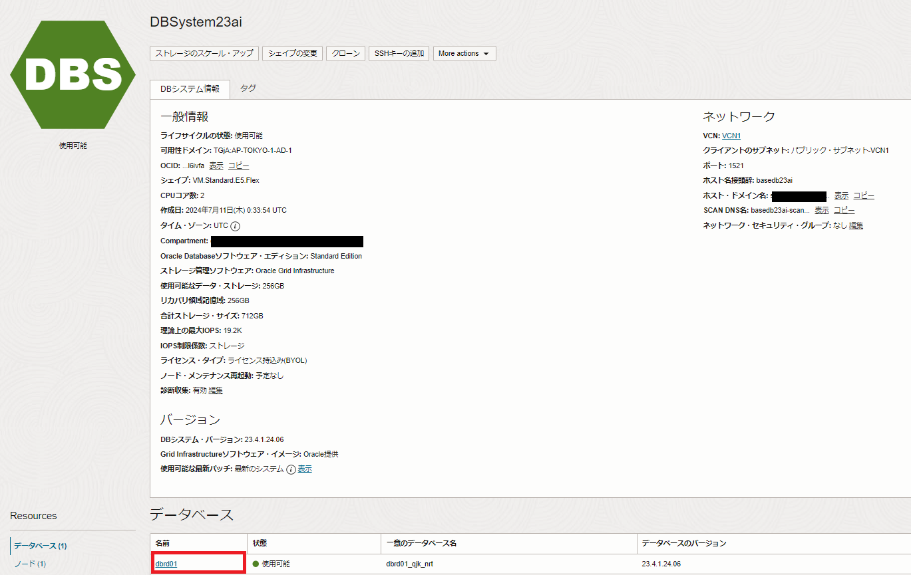
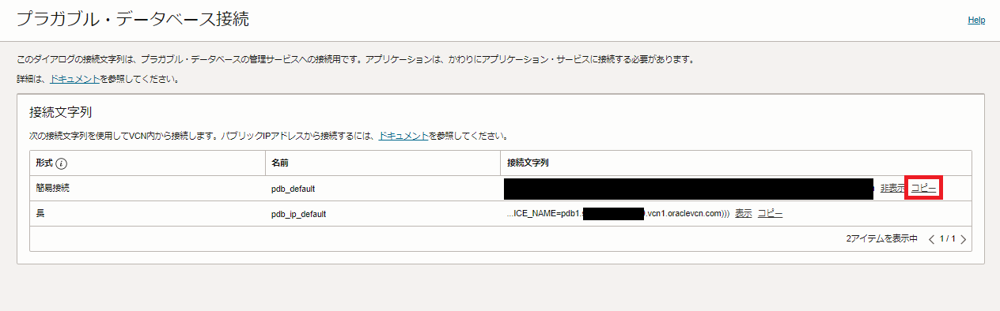
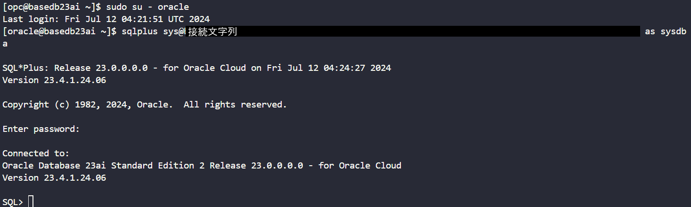

RAGの構成とシナリオ
RAGの構成
本チュートリアルはLangChainを使ったRAG構成をステップバイステップで実装する内容となっています。
構成に利用するサービスは以下の通りです。
- テキスト生成モデル：OCI Generative AI(Command R Plus)
- ドキュメントデータのベクトル化に利用するモデル : Oracle Cloud Generative AI Service(embed-multilingual-v3.0)
- ベクトルデータベース: Oracle Database 23ai Free(OCI Computeにインストール)、Base Database Service
※LangChainって何？という方はこちらの記事 をご参照ください。
また、本チュートリアルではAI Vector Searchの以下のチュートリアルを実施済みであることが前提となっています。
本チュートリアルでは、OCI GenAIサービスにAPIコールするためのクレデンシャル情報が必要です。 501: OCICLIを利用したインスタンス操作を参照して、APIキーを事前に作成してください。
ドキュメントデータ
ベクトルデータベースにロードするドキュメントデータは下図のような内容のPDFファイルです。テキストの内容としては架空の製品であるロケットエンジンOraBoosterの説明文章です。企業内のデータを想定し、テキストの内容としては、存在しない製品かつ完全な創作文章、ということでLLMが学習しているはずのないデータということになります。後の手順でこちらのPDFファイルをベクトルデータベースにロードします。

シナリオ
本記事では下記のようなシナリオでテキスト生成を行い、LLMが学習していないデータ(上述のPDFの内容)に関する質問に対してRAG構成でうまく回答できることを確認します。また、非RAG構成とのテキスト生成結果を比較し、RAGの有効性を確認します。
- 架空の製品OraBoosterについて質問をします。
- プロンプトを入力しOraBoosterの説明テキストが生成されていることを確認します。この際、LangChainのChainの仕組みにより下記の処理が自動化されているため、LangChainを使わないスクラッチのRAGと比べてコードコードが大幅に簡素化されていることが分かります。
- LLMはこの製品の知識を持ち合わせていないため、ベクトルデータベースに類似検索を行い、ヒントとなるテキストデータ(チャンクテキスト)を検索
- もとのプロンプトと類似検索で取得したチャンクテキストををテキスト生成モデルに入力しテキストを生成
- 前回同様ベクトルデータベースへのChainを使わずに、LLMにクエリしテキスト生成を行い、上記「2」で生成されたテキストと比較しRAGの有効性を確認します。
※ 実装は興味ないので結果だけ知りたいですという方は「テキスト生成を実行する」の章をご参照ください。
RAGの実装
1-1. Oracle Database 23ai Freeをインストールする
こちらを参照してOracle Database 23ai Freeをインストールします。
SYSでDBにログインし、本チュートリアルで使用するDBユーザーを作成(ユーザー名docuser, パスワードdocuser)、念のためどこからでも接続できるようにしておきます。
sqlplus sys@localhost:1521/freepdb1 as sysdba
grant connect, ctxapp, unlimited tablespace, create credential, create procedure, create table to docuser identified by docuser;
grant execute on sys.dmutil_lib to docuser;
grant create mining model to docuser;
BEGIN
DBMS_NETWORK_ACL_ADMIN.APPEND_HOST_ACE(
host => '*',
ace => xs$ace_type(
privilege_list => xs$name_list('connect'),
principal_name => 'docuser',
principal_type => xs_acl.ptype_db
)
);
END;
/
docuserでログインできることを確認します。
sqlplus docuser/docuser@freepdb1
1-2. Base Database Service環境でのセットアップ
まずはSYSユーザーでPDBに接続できることを確認します。
OCIコンソールのBaseDBの画面から、データベース名をクリックします。

左下のResourcesのプラガブル・データベースをクリックし、PDBを選択します。
PDB接続をクリックします。
接続文字列が表示されるので、簡易接続の接続文字列をコピーします。

これでPDBへの接続文字列を取得できました。
BaseDB環境に戻り、oracleユーザーにスイッチします。
sudo su - oracle
SQL*Plusで先ほど取得した接続文字列を使用してPDBへSYSで接続します。
sqlplus sys@<接続文字列> as sysdba
SYSのパスワードが求められるので、入力してログインします。

本チュートリアルで使用するdocuserを作成していきます。
grant connect, ctxapp, unlimited tablespace, create credential, create procedure, create table to docuser identified by WelCome123#123#;
grant execute on sys.dmutil_lib to docuser;
grant create mining model to docuser;
BEGIN
DBMS_NETWORK_ACL_ADMIN.APPEND_HOST_ACE(
host => '*',
ace => xs$ace_type(
privilege_list => xs$name_list('connect'),
principal_name => 'docuser',
principal_type => xs_acl.ptype_db
)
);
END;
/
SQL*Plusからログアウトします。
exit
opcユーザーにスイッチします。
exit
2. Python環境のセットアップ
2024/7現在、BaseDB環境ではPython3.6.8がデフォルトでインストールされていますが、本チュートリアルではPython3.11を前提に進めます。なお、OSはOracle Linux 8.8を前提としています。
rootにスイッチし、以下でPython3.11のインストールを行います。
sudo su -
dnf install python3.11
ln -s /usr/bin/python3.11 /usr/bin/python
バージョンを確認します。
python -V
出力:
[oracle@basedb23ai ~]$ python -V
Python 3.11.9
本チュートリアルではvenvモジュールを使ってPython仮想環境を作成します。 お好みに応じてAnacondaやMinicondaで仮想環境を作成していただいても構いません。
oracleユーザーにスイッチします。
su - oracle
cd $ORACLE_HOME/python
python -m venv myenv
source myenv/bin/activate
本チュートリアルで使用するPythonパッケージをインストールします。
pip install --upgrade pip
pip install ipython langchain langchain-community pypdf pandas oracledb oci
これでPython環境のセットアップは完了です。
3. ドキュメントをベクトルデータベースにロードする
ここからは、PDFファイルをテキストチャンクに分割し、埋め込みモデルでベクトルデータベースにロードする処理を行います。
下図のようなフローでPDFファイルを最終的にベクトルデータベースにロードしてゆきます。
フルスクラッチでのRAGの実装とは異なり、今回はLangChainを利用するためこの過程は非常にシンプルなコードとなります。
使用するサンプルデータをダウンロードしておきます。
cd /tmp
wget https://oracle-japan.github.io/ocitutorials/ai-vector-search/ai-vector106-23ai-langchain-rag/rocket.pdf
ここからはPythonで処理を行います。
本チュートリアルではインタラクティブな作業が可能なIPythonを使用します。
cd $ORACLE_HOME/python
ipython
まずは、LangChainのドキュメントローダーで/tmpに配置したPDFファイルをロードし、テキストに変換します。
from langchain.document_loaders import PyPDFLoader
loader = PyPDFLoader("/tmp/rocket.pdf")
documents = loader.load_and_split()
print(documents)
下記のようにPDFファイルドキュメントローダーにより構造解析されて、テキストに変換されます。
[Document(page_content='当社が開発したロケットエンジンである OraBooster は、次世代の宇宙探査を支える先進的な推進技術の\n象徴です。その独自の設計は、高性能と革新性を融合させ、人類の宇宙進出を加速させるための革命的\nな一歩となります。\nこのエンジンの核となるのは、量子ダイナミックス・プラズマ・ブースターです。このブースターは、\n量子力学の原理に基づいてプラズマを生成し、超高速で加速させます。その結果、従来の化学反応より\nもはるかに高い推力を発生し、遠く離れた惑星や星系への探査を可能にします。\nさらに、エンジンの外殻にはナノファイバー製の超軽量かつ超強度の素材が使用されています。この素\n材は、宇宙空間の過酷な環境に耐え、高速での飛行中に生じる熱や衝撃からロケットを守ります。\nまた、ハイパーフォトン・ジャイロスコープが搭載されており、極めて高い精度でロケットの姿勢を維\n持し、目標を追跡します。これにより、長時間にわたる宇宙飛行中でも安定した飛行軌道を維持し、\nミッションの成功を確保します。\nさらに、バイオニック・リアクション・レスポンダーが統合されています。このシステムは、人工知能\nと生体認識技術を組み合わせ、ロケットの異常な振動や動きを検知し、自己修復機能を活性化します。\n総じて、この新開発のロケットエンジンは、革新的な技術と未来志向の設計によって、宇宙探査の新た\nな時代を切り開くことでしょう。その高い性能と信頼性は、人類の夢を実現するための力強い支援とな\nることでしょう。', metadata={'source': '/tmp/rocket.pdf', 'page': 0})]
上記のテキストをLangChainのテキストスプリッターでチャンクテキストに分割します。今回もとりあえずCharacterTextSplitterで固定長で区切ってみます。(LangChainにはほかにもいくつかのテキストスプリッターがありますので興味ある方はいろいろためしてみてください。)
from langchain.text_splitter import CharacterTextSplitter
text_splitter = CharacterTextSplitter(separator="。", chunk_size=100, chunk_overlap=10)
docs = text_splitter.split_documents(documents)
print(docs)
下記の9つのチャンクテキストに分割されたことがわかります。
[Document(page_content='当社が開発したロケットエンジンである OraBooster は、次世代の宇宙探査を支える先進的な推進技術の\n象徴です', metadata={'source': '/tmp/rocket.pdf', 'page': 0}),
Document(page_content='その独自の設計は、高性能と革新性を融合させ、人類の宇宙進出を加速させるための革命的\nな一歩となります。\nこのエンジンの核となるのは、量子ダイナミックス・プラズマ・ブースターです', metadata={'source': '/tmp/rocket.pdf', 'page': 0}),
Document(page_content='このブースターは、\n量子力学の原理に基づいてプラズマを生成し、超高速で加速させます。その結果、従来の化学反応より\nもはるかに高い推力を発生し、遠く離れた惑星や星系への探査を可能にします', metadata={'source': '/tmp/rocket.pdf', 'page': 0}),
Document(page_content='さらに、エンジンの外殻にはナノファイバー製の超軽量かつ超強度の素材が使用されています。この素\n材は、宇宙空間の過酷な環境に耐え、高速での飛行中に生じる熱や衝撃からロケットを守ります', metadata={'source': '/tmp/rocket.pdf', 'page': 0}),
Document(page_content='また、ハイパーフォトン・ジャイロスコープが搭載されており、極めて高い精度でロケットの姿勢を維\n持し、目標を追跡します', metadata={'source': '/tmp/rocket.pdf', 'page': 0}),
Document(page_content='これにより、長時間にわたる宇宙飛行中でも安定した飛行軌道を維持し、\nミッションの成功を確保します。\nさらに、バイオニック・リアクション・レスポンダーが統合されています', metadata={'source': '/tmp/rocket.pdf', 'page': 0}),
Document(page_content='このシステムは、人工知能\nと生体認識技術を組み合わせ、ロケットの異常な振動や動きを検知し、自己修復機能を活性化します', metadata={'source': '/tmp/rocket.pdf', 'page': 0}),
Document(page_content='総じて、この新開発のロケットエンジンは、革新的な技術と未来志向の設計によって、宇宙探査の新た\nな時代を切り開くことでしょう', metadata={'source': '/tmp/rocket.pdf', 'page': 0}),
Document(page_content='その高い性能と信頼性は、人類の夢を実現するための力強い支援とな\nることでしょう', metadata={'source': '/tmp/rocket.pdf', 'page': 0})]
見にくいので少し整形します。
import pandas as pd
contents = []
for doc in docs:
contents.append(doc.page_content)
pd.DataFrame(contents)
下記9つのチャンクテキストです。
以降が、このチャンクテキストをベクトルデータベースにロードしつつ、埋め込みモデルを使って、ベクトル化を行う処理です。
まずは、作成済のdocuserでfreepdb1に接続します。
import oracledb
# Oracle Database 23ai Free版
username = "docuser"
password = "docuser"
dsn = "localhost/freepdb1"
# BaseDB版では以下をアンコメントアウトして実行します
# oracledb.init_oracle_client()
# username = "docuser"
# password = "WelCome123#123#"
#dsn = "<PDBの接続文字列>" (例) basedb23ai.xxxx.vcn1.oraclevcn.com:1521/pdb1.xxxx.vcn1.oraclevcn.com
try:
connection = oracledb.connect(user=username, password=password, dsn=dsn)
print("Connection successful!")
except Exception as e:
print("Connection failed!")
必要なライブラリをimportします。
from langchain_community.vectorstores import oraclevs
from langchain_community.vectorstores.oraclevs import OracleVS
from langchain_community.vectorstores.utils import DistanceStrategy
from langchain_core.documents import Document
from langchain_community.embeddings import OCIGenAIEmbeddings
利用する埋め込みモデルを定義します。今回はOCI Generative AI Serviceのembed-multilingual-v3.0というモデルを利用します。
embeddings = OCIGenAIEmbeddings(
model_id="cohere.embed-multilingual-v3.0",
service_endpoint="https://inference.generativeai.us-chicago-1.oci.oraclecloud.com",
compartment_id="ocid1.compartment.oc1..aaaaaaaxxxxxxx",
)
注意: 以下のエラーが出る場合は、APIキーの設定ファイル~/.oci/configが作成されていません。501: OCICLIを利用したインスタンス操作を参照して、APIキーを事前に作成してください。
LangChainのお決まりの関数であるfrom_documentsでベクトルデータベースにチャンクテキストをロードします。以下のように、ここまでの手順で定義済のオブジェクトを使って下記一つのコードでチャンクテキストをベクトル化しますが、ここでチャンクテキストとベクトルデータをロードする表を指定することになります。
vector_store_dot = OracleVS.from_documents(
# 作成済のチャンクテキスト
docs,
# 定義済の埋め込みモデル
embeddings,
# 定義済のデータベースのconnectionオブジェクト
client=connection,
# 新規作成する表の名前を任意で指定
table_name="doc_table",
# ベクトル検索時に使う距離計算の方法
distance_strategy=DistanceStrategy.DOT_PRODUCT,
)
今回はベクトル検索時に使う距離計算の方法を「ドット積」にしています。Generative AIの埋め込みモデル(Cohereのembed-multilingual-v3.0)はモデルを学習させる際にドット積を使っていることからそれに合わせてみました。(英語版のモデルであるembed-english-v3.0はコサイン類似度を使っているそうです。)こちらはチューニングポイントになりますから様々な距離計算を試してみてください。上記のDOT_PRODUCTの部分を他の計算方法、例えば、EUCLIDEAN_DISTANCEやCOSINEに変更するだけです。詳細はこちら。
また、今回はどちらでも構いませんが、以下のようにコードを実行すると索引も作成できます。下記の例ではIVF索引を作成しています。詳細はこちら
oraclevs.create_index(connection, vector_store_dot, params={"idx_name": "rocket", "idx_type": "IVF"})
ここまでで、PDFファイルをベクトルデータベースにロードする処理が完了です。
4. ベクトルデータベースに作成されたデータを確認してみる(オプション)
ロードされたベクトルデータを確認してみます。まずはdocuserでデータベースに接続します。
-- Oracle Database 23ai Free版
sqlplus docuser/docuser@freepdb1
-- BaseDB版
-- sqlplus docuser/WelCome123#123#@接続文字列
SQLPLUSの表示設定を変更します。
SET ECHO ON
SET FEEDBACK 1
SET NUMWIDTH 10
SET LINESIZE 80
SET TRIMSPOOL ON
SET TAB OFF
SET PAGESIZE 10000
SET LONG 10000
まず、作成した表の確認行います。下記のように、作成した表doc_tableには4つのカラムが作成されていることがわかります。
desc doc_table;
名前 NULL? 型
----------------------------------------- -------- ----------------------------
ID NOT NULL RAW(16)
TEXT CLOB
METADATA CLOB
EMBEDDING VECTOR(1024, FLOAT32)
行数を確認してみます。作成された9つのチャンクがあることがわかります。
select count(*) from doc_table;
COUNT(*)
----------
9
1行が選択されました。
続いて、id列を確認します。これがチャンクIDとなります。
select id from doc_table;
ID
--------------------------------
0F7492ED808A1434
119D5547095529E1
51093CB177D05731
7B55580B08284136
7D4C74E363F4D84B
9A7388795F6F32F9
A982E7674CE83517
E310339899A10640
E32DA2E49B802D4A
9行が選択されました。
続いて、text列を確認します。これがチャンクテキストになります。
select text from doc_table;
TEXT
--------------------------------------------------------------------------------
このブースターは、
量子力学の原理に基づいてプラズマを生成し、超高速で加速させます。その結果、従来の
化学反応より もはるかに高い推力を発生し、遠く離れた惑星や星系への探査を可能にし
ます
また、ハイパーフォトン・ジャイロスコープが搭載されており、極
めて高い精度でロケットの姿勢を維
持し、目標を追跡します
さらに、エンジンの外殻にはナノファイバー製の超軽量かつ超強度
の素材が使用されています。この素
材は、宇宙空間の過酷な環境に耐え、高速での飛行中に生じる熱や衝撃からロケットを守
ります
当社が開発したロケットエンジンである OraBooster は、次世代の宇
宙探査を支える先進的な推進技術の
象徴です
その独自の設計は、高性能と革新性を融合させ、人類の宇宙進出を
加速させるための革命的
な一歩となります。
このエンジンの核となるのは、量子ダイナミックス・プラズマ・ブースターです
その高い性能と信頼性は、人類の夢を実現するための力強い支援と
な
ることでしょう
これにより、長時間にわたる宇宙飛行中でも安定した飛行軌道を維
持し、
ミッションの成功を確保します。
さらに、バイオニック・リアクション・レスポンダーが統合されています
このシステムは、人工知能
と生体認識技術を組み合わせ、ロケットの異常な振動や動きを検知し、自己修復機能を活
性化します
総じて、この新開発のロケットエンジンは、革新的な技術と未来志
向の設計によって、宇宙探査の新た
な時代を切り開くことでしょう
9行が選択されました。
注意: 日本語の文字列が文字化けする場合は、DB接続前に以下を実行してNLS_LANGの変更を行います。
export NLS_LANG=Japanese_Japan.AL32UTF8
続いて、METADATA列を確認します。これがメタデータ(各チャンクの元のファイル名、ディレクトリ、ページ)になります。
select metadata from doc_table;
METADATA
--------------------------------------------------------------------------------
{"source": "/tmp/rocket.pdf", "page": 0}
{"source": "/tmp/rocket.pdf", "page": 0}
{"source": "/tmp/rocket.pdf", "page": 0}
{"source": "/tmp/rocket.pdf", "page": 0}
{"source": "/tmp/rocket.pdf", "page": 0}
{"source": "/tmp/rocket.pdf", "page": 0}
{"source": "/tmp/rocket.pdf", "page": 0}
{"source": "/tmp/rocket.pdf", "page": 0}
{"source": "/tmp/rocket.pdf", "page": 0}
9行が選択されました。
続いて、embedding列を確認します。これがチャンクテキストのベクトル値です。
select embedding from doc_table;
EMBEDDING
--------------------------------------------------------------------------------
[7.70187378E-003,2.79846191E-002,-1.53961182E-002,2.55432129E-002,-2.21405029E-0
02,-1.93977356E-003,2.78282166E-003,-2.00805664E-002,8.43048096E-003,-3.52478027
E-003,8.34960938E-002,3.3203125E-002,6.65283203E-003,3.6239624E-004,5.10406494E-
003,4.47387695E-002,4.81262207E-002,-2.25524902E-002,3.35083008E-002,-1.48544312
E-002,-3.94287109E-002,1.68914795E-002,7.90405273E-002,-8.69140625E-002,-3.38439
941E-002,-1.61895752E-002,-8.81195068E-003,2.21252441E-002,-3.78112793E-002,-3.4
8815918E-002,-3.40270996E-002,2.78778076E-002,5.53131104E-003,3.23791504E-002,-1
.26037598E-002,-1.50985718E-002,2.1484375E-002,-1.53274536E-002,1.38244629E-002,
2.2064209E-002,-7.36236572E-003,-1.89361572E-002,-1.33514404E-003,3.9100647E-003
,-4.34112549E-003,-3.92913818E-003,9.04846191E-003,2.92778015E-003,3.75061035E-0
02,-3.05938721E-003,4.9621582E-002,-1.42974854E-002,-8.46862793E-003,-6.99234009
E-003,7.70187378E-003,1.63421631E-002,-1.32675171E-002,6.78253174E-003,3.9703369
1E-002,1.26266479E-003,1.93481445E-002,3.27682495E-003,-3.44238281E-002,1.457214
5. RAGを実装する(Generative AI ServiceのCommand-R-Plusのパターン)
ここからがRAGの実装です。前回のフルスクラッチと異なり、この部分のコードはLangChainにより大幅にシンプルになります。下図のような処理を経て、テキスト生成が行われますが、実際のコードはLangChainのChainを定義する作業になります。
Chainとは「繋ぐ」という意味になりますが、文字通り、プロンプトテキスト、Embeddingモデル、ベクトルデータベース、テキスト生成モデルを繋ぐChainを定義するコードが以下になります。
まずは下記コードでプロンプトテンプレートを作成します。
from langchain_core.prompts import ChatPromptTemplate
from langchain_core.messages import AIMessage, HumanMessage, SystemMessage
# promptの作成
template = """contextに従って回答してください:
{context}
質問: {question}
"""
prompt = ChatPromptTemplate.from_template(template)
次にテキスト生成モデルを指定します。まずはGenerative AI Serviceの command-r-plusです。
from langchain_community.chat_models.oci_generative_ai import ChatOCIGenAI
llm = ChatOCIGenAI(
# model_id="cohere.command-r-16k",
model_id="cohere.command-r-plus",
service_endpoint="https://inference.generativeai.us-chicago-1.oci.oraclecloud.com",
compartment_id="ocid1.compartment.oc1..xxxxxxxxxxxxxxxxxxx",
model_kwargs={"temperature": 0.7, "max_tokens": 500},
)
ベクトル検索を実行するベクトルデータベースを定義します。もちろんここでは事前に定義したvector_store_dotを指定します。
retriever = vector_store_dot.as_retriever()
これでChainを作る必要なパーツが全て定義できました。これまで定義したオブジェクトを全て使い、下記のようにChainを定義します。
from langchain.schema.runnable import RunnablePassthrough
from langchain.schema.output_parser import StrOutputParser
chain = (
{"context": retriever, "question": RunnablePassthrough()}
| prompt
| llm
| StrOutputParser()
)
ここまでの処理でRAGのフロー実装完了です。LangChainにより、RAGの実装は事実上Chainを定義するだけというシンプルなものになることがわかります。
RAGが実装できましたので、テキスト生成を行います。
print(chain.invoke("OraBoosterとは何ですか?"))
上記プロンプトで生成されたテキストが以下になります。ベクトルデータベースのデータを使ってテキスト生成していることがわかります。
※必ずしも以下のテキストが生成されるわけではありません。ここでは、インターネット上にない製品であるOraBoosterに関する質問に対して、LLMが適切に回答できるかを確認します。
OraBooster は、あなたのかいしゃが開発した最先端のロケットエンジンです。量子力学の原理を利用してプラズマを生成および超高速加速し、従来よりもはるかに高い推力を生み出し、遠方の惑星や星系への宇宙探査を可能にします。さらに、ハイパーフォトン ジャイロスコープを搭載することで、極めて高い精度でロケットの姿勢制御と目標追跡を行います。OraBooster は、その優れた性能と信頼性により、人類の夢を実現する強力な原動力となるでしょう
6. 非RAG構成と比較してみる。
非RAG構成、つまりベクトルデータベースを使わない場合の問い合わせです。コードとしてはChainオブジェクトではなく、LLMを定義しただけのオブジェクトを使ってテキスト生成を行う普通の問い合わせです。
response = llm.invoke("OraBoosterとは何ですか?")
print(response.content)
ベクトルデータベースを参照しないため、ハルシネーション満載のテキストが生成されます。しかも前回同様、口腔衛生用品としてテキスト生成がされています。これはOraBoosterという単語が Oral Careの単語に類似しているからだと思われます。
OraBooster は、歯の健康をサポートし、口腔内の環境を改善することを目的とした口腔衛生用品のブランドです。OraBooster の製品には、歯磨き粉、マウスウォッシュ、歯ブラシなどが含まれ、口腔内の細菌のバランスを整え、歯と歯茎の健康を促進するとされています。
OraBooster の製品は、天然成分を使用しており、口腔内の pH バランスを最適化することでプラークや歯垢の形成を抑制し、歯肉炎や歯周病を予防する効果が期待できます。また、一部の製品にはフッ素が含まれており、虫歯の予防にも役立ちます。
OraBooster は、口腔内の健康が全身の健康と密接に関わっているという考えに基づいて開発されており、口腔内の環境を改善することで、より健康的な生活を送ることを目指しています。これらの製品は、歯科医や医療専門家と協力して開発されており、安全性と有効性がテストされています。
OraBooster の製品は、オンラインや一部の小売店で購入することができ、定期的な歯磨きやフロスとともに使用することで、より効果的な口腔ケアが実現できます。
以上、RAGと非RAG構成の違いでした。
番外編：RAGを実装する(Cohere社 Command-R-Plusのパターン)
その他のモデルとしてCohere社のCommand-R-Plusを使ったパターンです。llm定義の部分をcohereに挿げ替えるだけで、その他のコードは全く同じです。LangChainを使うメリットですね。
from langchain.schema.output_parser import StrOutputParser
from langchain.schema.runnable import RunnablePassthrough
from langchain_core.prompts import PromptTemplate
template = """
次のコンテキストに基づいて日本語で回答してください。: {context}
質問: {question}
"""
prompt = PromptTemplate.from_template(template)
import os
import getpass
os.environ["COHERE_API_KEY"] = getpass.getpass("Cochere API Key:")
from langchain_cohere import ChatCohere
llm_cohere = ChatCohere(model="command-r-plus")
ベクトル検索を実行するベクトルデータベースを定義します。もちろんここでは事前に定義したvector_store_dotを指定します。
retriever = vector_store_dot.as_retriever()
chain = (
{"context": retriever, "question": RunnablePassthrough()}
| prompt
| llm_cohere
| StrOutputParser()
)
テキスト生成してみます。
print(chain.invoke("OraBoosterとは何ですか?"))
御覧の通り出力結果はほぼ同一です。
OraBooster は、次世代の宇宙探査を支える先進的な推進技術を象徴するロケットエンジンです。量子力学の原理に基づいてプラズマを生成し、超高速で加速させることで、従来の化学反応よりもはるかに高い推力を発生させます。これにより、遠く離れた惑星や星系への探査が可能となります。また、ハイパーフォトン・ジャイロスコープを搭載しており、極めて高い精度でロケットの姿勢を維持し、目標を追跡することができます。その高い性能と信頼性は、人類の夢を実現するための力強い支援となるでしょう。
さいごに
ベクトルデータベースに今回と同じOracle Database 23aiを使った以前の記事ではフルスクラッチでRAGの実装をしてみました。そして今回はLangChainを使っての実装です。
両者とも最もシンプルなRAG構成の実装ですが、比較してみると、やはりLangChainのほうがコーディングはかなり楽です。ドキュメントローダー、テキストスプリッターからベクトルデータベースへのロード、Chainの定義など全てのフローにおいて、LangChainユーザーにはお決まりの関数、お決まりのコード順序で、コード量もかなり少ないと思います。
その反面、やはりフルスクラッチでないと詳細な調整ができないのだなとも感じました。例えば、一番重要なベクトルデータベースへの類似検索のSQLをユーザー自身が定義できるのはフルスクラッチの大きなメリットだと思います。
その他、RAGの実装では様々な論文が毎月のように提出され、RAGのフロー設計においては新しいタイプのものが提案されています。この中にはLangChainがまだ実装できていないフローも多々あり、先端の手法を取り入れたい場合はやはりフルスクラッチでの実装ができなければいけないのだなという印象です。